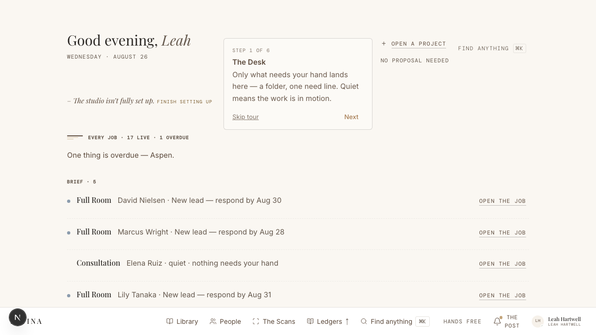

Controls and captions share one voice
9–11px uppercase mono is used for metadata, status, navigation, and actionable text. “Message Sarah,” “+ Task,” and “Studio eyes only” can carry similar visual weight.
Trial follow-up · The Document · Designer portal
The portal’s editorial restraint is working. The control hierarchy is not. Actions frequently wear the same size, color, and cadence as captions—so designers can read the page before they can tell what to do with it.
01 · Current-state review
Scope: the modern designer workspace—Desk, open document, Library, People, and the shared drawer. The earlier wayfinding work is already in place; this review addresses the local controls that remain hard to spot after a designer arrives.
In two seconds, the eye finds the greeting, folio titles, and section labels. It does not consistently find the next meaningful act.
9–11px uppercase mono is used for metadata, status, navigation, and actionable text. “Message Sarah,” “+ Task,” and “Studio eyes only” can carry similar visual weight.
Library uses a strong dark Capture button, People uses a quiet outlined Add button, Desk uses naked text links, and the document letterhead uses tiny inline instruments.
Desk folios lift on hover and open as one large target, but the visible face describes state rather than naming the action. Touch users never receive the hover clue.
A designer may need to scan the masthead, folio face, section footer, right margin, bottom drawer, and ⌘K before finding the relevant verb.
The current clay on off-white is roughly 2.18:1 contrast. It works as material, border, fill, or a large mark—not as the sole signal for small actionable copy.
The fixed bottom bar is visible, but page-local actions still recede into content. Small labels and tight hit areas are harder to parse when the page becomes one column.

02 · Proposed system updates
These are not three competing visual concepts. They are shared usability repairs. The directions that follow differ in where the emphasis lives and how much chrome they add.
Primary: one per region. Secondary: outlined. Tertiary: plain text with an underline or arrow. Do not use metadata styling for executable controls.
SUse specific verb + object labels—“Review decision,” “Send Friday update,” “Request sign-off”—instead of status-only stamps or generic “Add.”
SReserve predictable homes: one page action in the masthead, one next action on a folio, one action at a section head, and confirmation controls at a sheet footer.
MUse at least 12px for utility labels, 44px hit targets, and charcoal/mocha action text. Keep clay as a material cue—fill, edge, rule, or underline.
MKeep the whole card clickable, but add a persistent named action. State explains why; the control explains what happens next.
MThe emphasized verb should follow the work: review → send → nudge → mark signed. Only one action earns the dark ink at a time.
LMove the current screen’s primary act into a labeled, thumb-reachable dock; keep Studio navigation distinct from the work’s next step.
MPreserve the editorial hierarchy by spending boldness on verbs—not by making every container louder.
Introduce a restrained, repeatable button grammar: charcoal for the single next act, an aged-oak outline for secondary acts, and underlined text for tertiary acts. Folios gain a named footer action. Nothing changes the page’s structure; the verbs simply receive enough ink to be read as controls.
Friday · July 26
One page act gets dark ink
One decision overdue—oldest due July 24.
Decision dueFriday update drafted—ready for your eye.
Draft readySarah Whitfield · Design · $100,000
Keep the paper itself almost untouched. A persistent sidecar names what is in hand, explains why it matters, and holds the current primary and secondary acts. Selecting a folio or moving through a document updates the margin. This makes the next step impossible to miss while preserving the reading surface.
Friday · July 26
Sarah Whitfield · Design · $100,000
Make the action a physical part of the paper object: a pull tab on a folio, a clipped tab on a section rule, and ticket-like actions in page heads. This is the most distinctively Patina direction—memorable, tactile, and legible— but it must be reserved for true next steps or the desk becomes a filing cabinet.
Friday · July 26
Pull only what needs your hand
One decision overdue—oldest due July 24.
Decision dueFriday update drafted—ready for your eye.
Draft readyRestraint rule A folio gets one attached tab only when it appears under “Needs your hand.” In-motion items and settled sections remain tab-free.
Sarah Whitfield · Design · $100,000
03 · Recommended ruling
The best answer is not to choose the loudest concept. It is to establish a reliable action grammar everywhere, then add stronger contextual guidance only where complex documents prove they need it.
It repairs the immediate trial issue without changing The Document’s architecture: stronger labels, predictable slots, explicit folio actions, accessible contrast, and larger targets. Then test the Action Margin inside one action-dense project document. Borrow Bookbinder Tabs only for high-priority folios if the team wants a more ownable signature.
04 · Direction check
Choose the closest direction, then note what to keep or reject. The page stores the choice only in this browser and can copy a compact feedback brief—nothing is sent.